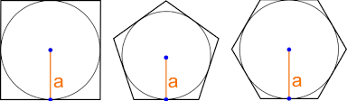

Pentagono
Un poligono è regolare quando ha tutti i lati e gli angoli congruenti. Il poligono regolare formato da 5 lati prende il nome di pentagono regolare. È formato da 5 triangoli isosceli congruenti, con un vertice comune coincidente con il centro del poligono.

L’apotema è l’altezza di ciascuno di questi triangolini che riusciamo a ricavare in un poligono regolare. Più in generale l'apotema è il segmento di perpendicolare compreso tra il centro del poligono regolare e il suo lato. Oppure poiché un poligono regolare è sempre iscrivibile e circoscrivibile a due circonferenze concentriche, l'apotema è definito solo nel caso del poligono regolare, come il raggio della circonferenza inscritta.
Il centro comune alle due circonferenze è detto centro del poligono; il raggio della circonferenza iscritta è detta apotema e quello della circonferenza circoscritta è detto raggio del poligono.
Area poligono regolare
L’area dei poligoni regolari è data dalla somma delle aree dei triangolini che riusciamo a disegnare all’interno di ciascun poligono regolare. Ciascun triangolino in cui abbiamo suddiviso il poligono regolare ha come base il lato del poligono (l) e come altezza l’apotema (a). Dovremo moltiplicare questa quantità per il numero di triangolini ricavati in ciascun poligono, cioè per il numero di lati (n) del poligono regolare di cui stiamo calcoando l’area.
con p il perimetro del poligono.